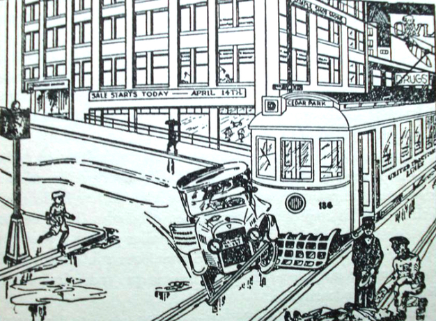

El rumor
Juan Muñoz
Universitat Autònoma de Barcelona
juan.munoz@uab.cat
http:/juan.psicologiasocial.eu

Definición
Mensajero del error y del mal tanto como de la verdad, el rumor, la más rápida de todas las plagas, va desencadenando el terror y se fortifica difundiéndose.
Virgilio, La Eneida
Definición
Un rumor es una información actual sobre un individuo o acontecimiento cuyo fundamento no se ha verificado y que circula de persona a persona, satisfaciendo algún tipo de necesidad personal o social. Para Allport y Postman (1947, p. 11) el rumor es “una proposición específica para creer, que se pasa de persona a persona, por lo general oralmente, sin medios probatorios seguros para demostrarla”
Definición
Enunciado ligado a los acontecimientos cotidianos, destinado a ser creído, transmitido de una persona a otra, normalmente de boca en boca, sin que existan datos concretos que permitan establecer su exactitud.
Allport & Postman (1947)
Definición
Tipo de mensaje que circula en una masa social a partir de los contactos interpersonales sucesivos y está constituido por fragmentos dispersos de mensajes difundidos a través de canales y recompuestos por los individuos, en función de cierto número de estereotipos o de valores, para lograr una coherencia explicativa.
(Moles, La comunicación y los mass media, 1975)
Características del rumor
- Aflora en situaciones críticas
- Surge en situaciones de privación de información
- Es comunicación informal
- Se propaga entre grupos y personas implicados en una misma situación particular
- Se distorsiona con la transmisión
- Aparece para satisfacer emociones y necesidades
- Se refiere, normalmente, a temas próximos en el espacio y en el tiempo.
Características de los rumores
- Los rumores son información. No son opiniones que la gente comparte. Los rumores son informativos.
- Están en circulación. Si tienes tu propia teoría conspirativa personal de que nadie ha pisado la luna, no es un rumor si nunca se lo cuentas a nadie.
- No están verificados. Esta es la clave. Si estoy en una reunión de secundaria y trato de difundir la noticia de que Jordi y Laura están liados, no es un rumor si Jordi y Laura publicaron una foto de su relación en Facebook. Sí, es informativo y está en circulación, pero dado que se ha verificado como cierto, técnicamente no es un rumor.
- Los rumores son “instrumentalmente relevantes”. Responden preguntas que la gente quiere que se respondan porque se consideran importantes o significativas. Si hay un rumor de que una asignatura está suspendiendo al 90%, ¡eso es instrumentalmente relevante! Se ha sugerido que los rumores difunden una “actividad de creación de pensamiento grupal” porque sirven para ayudar a las personas a comprender una situación ambigua.
Tipos de rumor
- Expresan deseos o “sueños imposibles”
- Pesimistas o de miedo
- De contenido agresivo
- Sobre productos
- Sobre desastres
- De atrocidades
- De conspiraciones
Knapp (1944)
Procter & Gamble
Panfleto de Villejuif
Allport y Postman: Transmisión serial

El enfoque de Allport y Postman es diferente del que trata el rumor como una forma de opinión pública y a la opinión pública como un complejo proceso colectivo. Asumen que el contexto social en el que se producen los rumores puede reducirse a una simple cadena de sujetos; que, por implicación, la amplia circulación del rumor no es nada más que la adición de tales cadenas; y que el rumor puede ser explicado, al menos en parte, por referencia a mecanismos psicológicos uniformes y omnipresentes como ‘el proceso economizador de memoria’.
Peterson & Gist (1951, p. 161)
Allport y Postman: Tranformación
- Nivelación o reducción: Según va circulando, el rumor se reduce, se acorta, se hace más conciso y por lo tanto más fácil de recordar y transmitir.
- Acentuación: Percepción, retención y narración selectiva de un limitado número de pormenores de un contexto mayor.
- Asimilación: Distorsión de la información por asimilación a los marcos de referencia de la persona.
- Interpretación: Se interpreta el mensaje desde los propios sentimientos, valores, modificando y a veces tergiversando la intención del emisor y el contenido del mensaje.
Allport & Postman (1947)
Transformación
- Simplificadora: La elaboración es relativamente rara, normalmente se tiende a esquematizar, simplificando al omitir detalles que pueden parecer no pertinentes y que hacen que el relato sea cada vez más coherente, cambiando lo extraño por familiar.
- Racionalizante: consistente en una adaptación del relato a la «mentalidad» del grupo social que lo transmite.
- Acentuadora: que da relevancia a ciertos eventos alrededor de los cuales el relato adquiere su significación.
Bartlett (1932)
En gran medida, los rumores se comunican como un esfuerzo en pos del significado, es decir, que ayudan a las personas a dar sentido a lo que está sucediendo a su alrededor. Chismorrear es una manera de tratar de explicar lo que está sucediendo y por qué -Ya se trate de un crimen en el barrio, una crisis política, o un cambio en la gestión de una empresa. Difundir rumores es el medio mediante el cual las personas tratan de conocer los hechos, obtener suficiente información para reducir su malestar psicológico y aliviar sus temores.
Kimmel (2004, p. 3)
Transmisión
R ∼ i × a
La fuerza de un rumor puede ser medida a través de la multiplicación de su importancia por su ambigüedad
Allport & Postman (1947)
La ambigüedad del rumor multiplica su importancia . Para que se difunda un rumor, no sólo debe ser ambiguo, sino también tener algún tipo de relevancia para la persona . El interés de las personas implicadas, el tipo de relaciones que mantienen entre ellas, o el interés del transmisor de dar una apariencia de veracidad, también pueden influir en la distorsión.
Transmisión: Serie vs. red

- Nos están invadiendo
- Se quedan con todas las ayudas sociales
- Abusan de los servicios sanitarios y colapsan las urgencias
- No pagan impuestos
- Reciben ayudas para abrir comercios y no les inspeccionan
Vacuna
Contra los rumores
Fake News
Fake news, comunmente, es la expresión que se usa para identificar información falsa en los principales medios de comunicación, especialmente en el contenido web y redes sociales,
Una definición más estricta sería que una noticia falsa es “un artículo de noticias que es intencional y verificablemente falso”. Dicha definición depende de dos aspectos clave: intención y verificabilidad. Por lo tanto, las noticias falsas son artículos de noticias que se escriben intencionalmente para engañar o desinformar a los lectores, pero se pueden verificar como falsas por medio de otras fuentes.
Referencias
Allport, G. W., & Postman, L. J. (1947). La psicología del rumor. Buenos Aires: Psique.
Bartlett, F. (1932). Remembering : A study in experimental and social psychology. Cambridge: Cambridge University Press.
Kimmel, A. (2004). Rumors and rumor control : A manager’s guide to understanding and combating rumors. Mahwah (N.J.): L. Erlbaum associates.
Knapp, R. H. (1944). A psychology of rumor. Public Opinion Quarterly, 8(1), 22–37.
Peterson, W. A., & Gist, N. D. (1951). Rumor and public opinion. American Journal of Sociology, 57, 159–167.